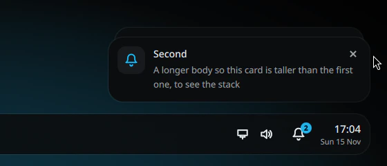

Satu bar.
Semuanya dekat.
Inilah desktop lalai KrissOS: bar tugas, pelancar, pemberitahuan, tetapan pantas dan skrin kunci. Pintasan Windows anda? Terus berfungsi, tidak perlu belajar semula.

Semua gambar di sini ialah tangkapan skrin sebenar daripada shell yang berjalan dalam VM. Tiada suntingan, tiada Photoshop.
Satu bar di bawah.
Butang pelancar, aplikasi yang disematkan dan yang sedang dibuka, mod kuasa, dulang sistem, kelantangan, pemberitahuan dan jam. Mahu sematkan aplikasi? Klik kanan. Mahu susun semula? Seret sahaja.

Tekan Windows, terus taip.
Taip sedikit, dan aplikasi serta tindakan yang sepadan terus muncul. Guna kekunci anak panah untuk bergerak dan Enter untuk membuka. Kekunci Menu atau Shift+F10 membuka menu aplikasi itu.

Bertindan, bukan bersepah.
Pemberitahuan baharu bertindan di atas bar. Yang terbaru di hadapan, yang lain di belakangnya. Loceng menunjukkan jumlahnya. Perlu fokus? Hidupkan Do not disturb, dan semuanya akan menunggu.

Windows+A, semua suis di sini.
Panel naik dari bar: Do not disturb, mod gelap atau cerah, mod kuasa dan kelantangan, lengkap dengan pilihan output (pembesar suara atau fon kepala). Sudah selesai? Seret ke bawah atau tekan Escape.

Rupa yang sama, dua kali.
Pada skrin kunci, anda boleh terus menaip kata laluan tanpa perlu klik dahulu. Skrin log masuk juga serupa: pengguna lain di bawah kiri, pilihan desktop di bawah kanan.


Gelap atau cerah, ikut suka.
Tukar dalam tetapan pantas. Bar, panel dan kertas dinding semuanya ikut bertukar. Sky Cyan tetap setia.


Pengguna Mac?
Susun atur Mac pilihan sedang dalam perjalanan: bar di atas, dok di tengah dan butang tetingkap di kiri, dengan rupa KrissOS yang sama.
Kekunci yang sudah anda hafal.
Ditetapkan semasa log masuk pertama. Kekunci yang telah anda ubah tidak akan kami usik.
- WindowsBuka pelancar
- Windows+LSkrin kunci
- Windows+ATetapan pantas
- Windows+NPemberitahuan
- Windows+DTunjukkan desktop; tekan sekali lagi untuk memulihkan tetingkap
- Windows+EFail
- Windows+← / Windows+→Lekapkan tetingkap ke kiri atau kanan
- Windows+↑ / Windows+↓Maksimumkan atau minimumkan
- Windows+1…9Lompat ke ruang kerja tersebut
- Print ScreenTangkap seluruh skrin, terus disimpan ke Pictures dan papan keratan
- Windows+Shift+STangkap kawasan yang anda pilih
- Alt+Tab / Alt+F4Tukar tetingkap, tutup tetingkap
Cuba dalam VM malam ini.
ISO live terus masuk ke KrissOS Shell. Tidak gemar animasi? Matikan dalam tetapan, dan semuanya terus jadi pantas.